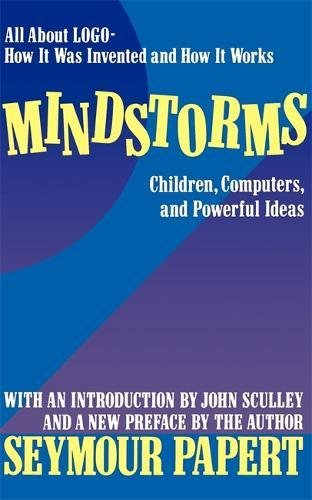

class: center, middle .title-header[Civiform] .title[Coding e Robotica] .subtitle[per l’innovazione sociale] .title-footer[Cividale, gennaio-febbraio 2022] --- # Presentazioni -- Comincio io… -- * programmatore per passione --- .center[<img src="img/spectrum.jpg" height="480px">] .illustration[ ZX Spectrum 48K, 1982] --- .center[] .illustration[ Clive Sinclair con uno ZX Spectrum] --- # Presentazioni Comincio io… * programmatore per passione --- # Presentazioni Comincio io… * programmatore per passione e mestiere * laureato in Scienze dell’informazione -- * membro di CoderDojoFVG --- .center[] .illustration[ CoderDojo] --- .center[] .illustration[ Dojo@School] --- .center[] .illustration[ TeacherDojo] --- .center[] .illustration[ RoboDojo] --- .center[] .illustration[ HardwareDojo] --- # Presentazioni Tocca a voi! -- * che attività svolgete? * motivo dell’interesse per il coding? * esperienze pregresse? * quali aspettative avete? --- # Struttura del corso -- * breve introduzione ai concetti base (oggi) -- * presentazione dell’ambiente Scratch (oggi) --- .center[] .illustration[ Scratch 3.0] --- # Struttura del corso * breve introduzione ai concetti base (oggi) * presentazione dell’ambiente Scratch (oggi) -- * principi di programmazione con Scratch (4-5 lezioni) -- * robotica con mBot --- .center[] .illustration[ mBot] --- .center[] .illustration[ mBlock 5.4] --- # Struttura del corso * breve introduzione ai concetti base (oggi) * presentazione dell’ambiente Scratch (oggi) * principi di programmazione con Scratch (4-5 lezioni) * robotica con mBot -- * varie ed eventuali --- # Attività -- * incentrata sulla pratica -- * orientata al progetto -- * difficoltà gradualmente crescente -- * i suggerimenti sono benvenuti! --- # Materiale di supporto -- * tantissime risorse in rete -- * libri e manuali: -- * Coding - programmare è un gioco (DeAgostini) -- * Imparare a programmare con Scratch (Apogeo) -- * TECHNOLogica - coding e robotica (DeAgostini) --- class: middle, center .title[Coding] --- # Coding Scrittura di programmi per calcolatori. -- * codifica -- * sviluppo (software) -- * implementazione (di programmi) -- * programmazione ??? Considereremo "software" e "programma informatico" sinonimi --- # Coding Frutto del .keyword[coding] è il .keyword[programma]. .process[ .center[ programma]] -- Insieme coordinato e strutturato di istruzioni, codificato secondo un opportuno .keyword[linguaggio di programmazione], atte a risolvere un dato problema mediante un calcolatore elettronico [Treccani]. --- # Coding Un .keyword[programma] nasce per essere eseguito da un computer. .process[ .center[ programma → computer → risposta]] ??? Citare l’informatica "unplugged". --- # Coding Come nasce un .keyword[programma]? .process[ .center[ ? → programma]] --- # Ciclo di vita del software L’esigenza nasce da un problema… .process[ .center[ problema → … → programma]] --- # Ciclo di vita del software … del quale si conosce una soluzione… .process[ .center[problema → soluzione → … → programma]] --- # Ciclo di vita del software … che è stata **formalizzata** in un .keyword[algoritmo]. .process[ .center[ problema → soluzione → algoritmo → programma]] --- class: middle > Programming is not about typing, it’s about thinking. .author[ — Rich Hickey] --- # Fasi del ciclo di vita del software .process[ .center[ problema → soluzione → algoritmo → programma]] .stages[ ] --- # Fasi del ciclo di vita del software .process[ .center[ .analysis[problema → soluzione] → algoritmo → programma]] .stages[ 1. .stage[.analysis[analisi]] ] --- # Fasi del ciclo di vita del software .process[ .center[ problema → .design[soluzione → algoritmo] → programma]] .stages[ 1. .stage[analisi] 2. .stage[.design[progettazione]] ] --- # Fasi del ciclo di vita del software .process[ .center[ problema → soluzione → .coding[algoritmo → programma]]] .stages[ 1. .stage[analisi] 2. .stage[progettazione] 3. .stage[.coding[coding]] ] --- # Fasi del ciclo di vita del software .process[ .center[ problema → soluzione → algoritmo → .test[programma]]] .stages[ 1. .stage[analisi] 2. .stage[progettazione] 3. .stage[coding] 4. .stage[.test[collaudo]] ] --- # Fasi del ciclo di vita del software .process[ .center[ problema → soluzione → algoritmo → programma]] .stages[ 1. .stage[analisi] 2. .stage[progettazione] 3. .stage[coding] 4. .stage[collaudo] ] --- # Analisi -- Richiede l’uso di tecniche di .keyword[problem solving]. .process[ .center[problema → soluzione]] --- # Analisi Richiede l’uso di tecniche di .keyword[problem solving]. .process[ .center[problema → idea → soluzione]] --- # Analisi Richiede l’uso di tecniche di .keyword[problem solving]. .process[ .center[problema → ~~idea~~ → soluzione]] --- class: middle .center[] .illustration[ Bruno Munari (1981)] --- # Analisi .process[.center[problema → definizione]] -- Che tipo di soluzione è desiderabile? -- * completa, definitiva? -- * provvisoria, approssimativa? -- * di minor costo? -- * … --- # Analisi .process[.center[definizione → scomposizione]] -- Scomposizione del problema generale nelle sue componenti. -- Moltiplica il numero di problemi da risolvere. -- Riduce la complessità di ogni singolo sottoproblema. --- # Analisi .process[.center[scomposizione → raccolta dati]] -- Analisi delle soluzioni esistenti. -- Verifica dell’applicabilità delle soluzioni trovate. -- Soluzioni non applicabili diventano fonte d’ispirazione. --- # Analisi .process[.center[raccolta dati → integrazione]] -- Conciliazione delle soluzioni parziali con il progetto generale. -- .important[ La creatività che nasce dalla metodica ricombinazione delle soluzioni si sostituisce all’idea dell’"illuminazione geniale".] --- class: middle .process[.center[ problema ↓ definizione ↓ scomposizione ↓ raccolta dati ↓ integrazione ↓ soluzione]] --- # Progettazione -- Formalizzazione della soluzione. .process[ .center[soluzione → algoritmo]] --- # Esempio .process[problema] -- Preparare della pasta al sugo per due persone. --- # Esempio .process[soluzione] -- * far bollire l’acqua -- * aggiungere il sale -- * buttare la pasta -- * quando sembra cotta, scolare -- * aggiungere il sugo e servire --- # Esempio .process[soluzione] * far bollire l’acqua - .highlight[**come, dove?**] * aggiungere il sale * buttare la pasta * quando sembra cotta, scolare * aggiungere il sugo e servire --- # Esempio .process[soluzione] * far bollire l’acqua - .highlight[**come, dove?**] * aggiungere il sale - .highlight[**quanto?**] * buttare la pasta * quando sembra cotta, scolare * aggiungere il sugo e servire --- # Esempio .process[soluzione] * far bollire l’acqua - .highlight[**come, dove?**] * aggiungere il sale - .highlight[**quanto?**] * buttare la pasta - .highlight[**quanta?**] * quando sembra cotta, scolare * aggiungere il sugo e servire --- # Esempio .process[soluzione] * far bollire l’acqua - .highlight[**come, dove?**] * aggiungere il sale - .highlight[**quanto?**] * buttare la pasta - .highlight[**quanta?**] * quando sembra cotta, scolare - .highlight[**sembra!?**] * aggiungere il sugo e servire --- # Esempio .process[soluzione] * far bollire l’acqua - .highlight[**come, dove?**] * aggiungere il sale - .highlight[**quanto?**] * buttare la pasta - .highlight[**quanta?**] * quando sembra cotta, scolare - .highlight[**sembra!?**] * aggiungere il sugo e servire - .highlight[**una cosa alla volta!**] --- # Esempio .process[algoritmo] -- * prendere una pentola -- * versarci 4 litri d’acqua dentro -- * mettere la pentola sul fornello -- * accendere il fuoco -- * attendere 5 minuti --- # Esempio .process[algoritmo] * versarci 4 litri d’acqua dentro * mettere la pentola sul fornello * accendere il fuoco * attendere 5 minuti * se l’acqua non bolle, tornare al passo precedente --- # Esempio .process[algoritmo] * mettere la pentola sul fornello * accendere il fuoco * attendere 5 minuti * se l’acqua non bolle, tornare al passo precedente * aggiungere due cucchiai di sale grosso --- # Esempio .process[algoritmo] * accendere il fuoco * attendere 5 minuti * se l’acqua non bolle, tornare al passo precedente * aggiungere due cucchiai di sale grosso * buttare 160 grammi di pasta nella pentola --- # Esempio .process[algoritmo] * attendere 5 minuti * se l’acqua non bolle, tornare al passo precedente * aggiungere due cucchiai di sale grosso * buttare 160 grammi di pasta nella pentola * predisporre due piatti fondi puliti --- # Esempio .process[algoritmo] * se l’acqua non bolle, tornare al passo precedente * aggiungere due cucchiai di sale grosso * buttare 160 grammi di pasta nella pentola * predisporre due piatti fondi puliti * attendere il tempo riportato nella confezione --- # Esempio .process[algoritmo] * se l’acqua non bolle, tornare al passo precedente * aggiungere due cucchiai di sale grosso * buttare 160 grammi di pasta nella pentola * predisporre due piatti fondi puliti * assaggiare la pasta --- # Esempio .process[algoritmo] * aggiungere due cucchiai di sale grosso * buttare 160 grammi di pasta nella pentola * predisporre due piatti fondi puliti * assaggiare la pasta * se non è cotta attendere un minuto e ripetere --- # Esempio .process[algoritmo] * buttare 160 grammi di pasta nella pentola * predisporre due piatti fondi puliti * assaggiare la pasta * se non è cotta attendere un minuto e ripetere * spegnere il fornello --- # Esempio .process[algoritmo] * predisporre due piatti fondi puliti * assaggiare la pasta * se non è cotta attendere un minuto e ripetere * spegnere il fornello * scolare la pasta --- # Esempio .process[algoritmo] * assaggiare la pasta * se non è cotta attendere un minuto e ripetere * spegnere il fornello * scolare la pasta * suddividere la pasta nei due piatti --- # Esempio .process[algoritmo] * se non è cotta attendere un minuto e ripetere * spegnere il fornello * scolare la pasta * suddividere la pasta nei due piatti * versare due cucchiai di sugo in ognuno dei due piatti --- # Esempio .process[algoritmo] * spegnere il fornello * scolare la pasta * suddividere la pasta nei due piatti * versare due cucchiai di sugo in ognuno dei due piatti * servire --- # Algoritmo Strategia di risoluzione di un .keyword[problema]. --- # Algoritmo Strategia di risoluzione di un .keyword[problema]: * finito -- * deterministico -- * non ambiguo -- * generale -- Deriva dal nome del matematico persiano **al-Khwarizmi**. --- # Algoritmo Spesso espresso in .keyword[pseudocodice]: ```cpp inizio imposta la velocità del robot a 100 per sempre DISTANZA = distanza dall’ostacolo più vicino se DISTANZA > 40 allora prosegui dritto altrimenti svolta a sinistra o destra fine ``` --- # Algoritmo A volte rappresentato con un .keyword[diagramma di flusso]… --- .center[] .illustration[ Diagramma di flusso] --- # Coding Scrittura di programmi per calcolatori. .process[ .center[algoritmo → programma]] -- Transcodifica di un .keyword[algoritmo] in una forma comprensibile ad un calcolatore affinché lo possa eseguire autonomamente. -- Lo strumento utilizzato è il .keyword[linguaggio di programmazione]. --- # Linguaggio di programmazione Linguaggio **formale** per la programmazione di un calcolatore. -- Dotato di **sintassi** e **semantica** ben definite. -- * **sintassi**: definisce le istruzioni e le regole di ricombinazione -- * **semantica**: specifica l’effetto sortito da ogni istruzione -- È il mezzo di comunicazione tra programmatore e calcolatore. --- # Linguaggio di programmazione -- * **Linguaggi di basso livello** -- , orientati alla macchina --- # Linguaggi di basso livello ```x86asm 00000110 00000101 00111110 00001000 00100001 10011111 01000011 01110111 00010000 11111100 11001101 11100100 01000000 11111110 00000011 00100000 11101110 00100010 00000111 01000000 01011101 11001101 00101101 01000001 00100001 10100001 01000011 ... ``` .illustration[ Codice binario Z80] --- # Linguaggi di basso livello ```x86asm 4082 06 05 DRIVER ld b,05 4084 3E 08 ld a,08 4086 21 9F 43 ld hl,439F 408A 77 ld (hl),a 408B 10 FC djnz DRIVER1 408D CD E4 40 call KYBD 4090 FE 03 cp 03 4092 20 EE jr nz,DRIVER 4094 22 07 40 ld (PPC),hl 4097 5D ld e,l 4098 CD 2D 41 call MOVE 409B 21 A1 43 ld hl,43A1 ... ``` .illustration[ Codice Assembly Z80] --- # Linguaggio di programmazione È il mezzo di comunicazione tra programmatore e calcolatore. * **Linguaggi di basso livello**, orientati alla macchina -- * **Linguaggi di alto livello** -- , orientati al programmatore --- # Linguaggi di alto livello ```cpp class RecentlyUsedList { std::vector<std::string> items_; public: bool empty() const { return items_.empty(); } size_t size() const { return items_.size(); } std::string operator[](size_t index) const { if (index >= size()) throw std::out_of_range("invalid subscript"); return items_[size() - index - 1]; } }; ``` .illustration[ Codice C++] --- # Linguaggi di alto livello ```python class NamedOutliers(dict): def __init__(self, metric, items, threshold): self.metric = metric self.threshold = float(threshold) self.details = {} for name, value in items.items(): if value > threshold: self.details[name] = value self.score = sum(self.details.values()) / self.threshold self.has_details = True ``` .illustration[ Codice Python] --- # Linguaggi di alto livello .center[] .illustration[ Codice Scratch] --- # Collaudo --- class: middle > No one in the brief history of computing has ever written a piece of perfect software. It’s unlikely that you’ll be the first. .author[ — Andy Hunt] --- # Collaudo In caso di non conformità a seconda dei casi può essere necessaria la revisione del .keyword[programma], dell’.keyword[algoritmo] o della .keyword[soluzione]. -- La ricerca della causa degli errori prende il nome di .keyword[debug]… --- .center[] .illustration[ Il primo bug] --- # Fasi del ciclo di vita del software * **analisi** * **progettazione** * **codifica** * **collaudo** -- … dunque perché fare .keyword[coding]? --- # Pensiero computazionale Il .keyword[coding] abilita il .keyword[pensiero computazionale], cioé: > […] i processi mentali coinvolti nel formulare problemi e le loro soluzioni in modo che le soluzioni possano essere rappresentate in una forma che può essere efficacemente eseguita da un agente di elaborazione dell’informazione. .author[ — Jeannette Wing] --- # Pensiero computazionale Il lato scientifico-culturale dell’informatica, definito anche .keyword[pensiero computazionale], aiuta a sviluppare competenze logiche e capacità di risolvere problemi in modo creativo ed efficiente, qualità che sono importanti per tutti i futuri cittadini. Il modo più semplice e divertente di sviluppare il pensiero computazionale è attraverso la .keyword[programmazione] in un contesto di gioco. .author[ — MIUR, 2014] --- # Pensiero computazionale * **analisi** * **progettazione** * **codifica** * **collaudo** --- # Pensiero computazionale * **analisi** → esercitare il pensiero * **progettazione** * **codifica** * **collaudo** --- # Pensiero computazionale * **analisi** → esercitare il pensiero * **progettazione** → formalizzare il pensiero * **codifica** * **collaudo** --- # Pensiero computazionale * **analisi** → esercitare il pensiero * **progettazione** → formalizzare il pensiero * **codifica** → automatizzare il pensiero * **collaudo** --- # Pensiero computazionale * **analisi** → esercitare il pensiero * **progettazione** → formalizzare il pensiero * **codifica** → automatizzare il pensiero * **collaudo** → validare del pensiero -- .important[ Il riscontro oggettivo e immediato della bontà della soluzione corrente permette di instaurare un ciclo virtuoso che accelera il raggiungimento della soluzione cercata] --- class: center, middle .title[Scratch] --- class: center, middle .center[] --- # Origini -- **1967 — Seymour Papert inventa il linguaggio LOGO al MIT** -- L’apprendimento avviene per ricreazione, non trasmissione. -- L’apprendimento è stimolato dalla manipolazione di oggetti reali. ??? Seymour Papert, 1928-2016; informatico, matematico, filosofo, pedagogo sudafricano; padre del costruzionismo. --- # Origini **1967 — Seymour Papert inventa il linguaggio LOGO al MIT** .important[ Uso del computer come supporto per l’apprendimento] --- # LOGO -- Linguaggio di programmazione dedicato ai bambini. -- Prima occasione per loro di sperimentare la programmazione. -- Consente di ottenere subito risultati rapidi e concreti. -- Il modulo più celebre è il **turtle graphics**. --- .center[<img src="img/papert-logo-bot.jpg" height="480px">] .illustration[ Seymour Papert, 1969] --- .center[] .illustration[ Mindstorms, 1980] --- .center[] .illustration[ LOGO per DOS, 1983] --- # Origini **1985 — Mitchell Resnick e Papert fondano il MIT Media Lab** --- class: middle, center >Quando impariamo a scrivere e a contare, non lo facciamo per diventare scrittori o matematici. […]. Ragionare come un programmatore ci permette di scomporre qualunque problema per gestirlo nel migliore dei modi, procedendo per astrazione, automazione e analisi fin dalla tenera età. .author[ — Mitchell Resnick] ??? Mitchell Resnick, 1956-; fisico e informatico, specialista in ricerca educativa, inventore di Scratch. --- .center[<img src="img/creative-learning-spiral.png" height="480px">] .illustration[ Spirale dell’apprendimento creativo] --- # 4 P -- * **Projects** * **Peers** * **Passion** * **Play** --- # 4 P * **Projects**: lavorare su progetti piuttosto che esercizi * **Peers** * **Passion** * **Play** --- # 4 P * **Projects**: lavorare su progetti piuttosto che esercizi * **Peers**: promuovere il confronto e la collaborazione * **Passion** * **Play** --- # 4 P * **Projects**: lavorare su progetti piuttosto che esercizi * **Peers**: promuovere il confronto e la collaborazione * **Passion**: l’interesse innesca l’impegno e la perseveranza * **Play** --- # 4 P * **Projects**: lavorare su progetti piuttosto che esercizi * **Peers**: promuovere il confronto e la collaborazione * **Passion**: l’interesse innesca l’impegno e la perseveranza * **Play**: l’aspetto ludico favorisce la sperimentazione --- # Origini **1985 — Mitchell Resnick e Papert fondano il MIT Media Lab** -- Patrocinato dalla LEGO (cfr. progetto LEGO Mindstorms). -- Inizia lo sviluppo di un linguaggio di programmazione a blocchi. -- Incentrato sulla creazione di storie digitali, giochi e animazioni. --- # Storia -- **2007 — Scratch v. 1.0, prima versione** -- **2009 — Scratch v. 1.4, la grande diffusione** -- **2013 — Scratch v. 2.0, versione on-line** -- **2013 — Scratch v. 3.0, Scratch Foundation** --- # Scratch * Doppia versione, online e offline -- * Gratuito e Open Source --- .center[] .illustration[ Scratch par furlan, 2016] --- .center[] .illustration[ Scratch par furlan, 2016] --- # Scratch * Doppia versione, online e offline * Gratuito e Open Source -- * Ricca e vivace comunità virtuale -- * Consente la condivisione e il remix dei progetti --- # Altri strumenti -- * ScratchJr, per bambini in età prescolare --- .center[] .illustration[ ScratchJr] --- # Altri strumenti * ScratchJr, per bambini in età prescolare -- * ScratchEd, risorse per insegnanti (fermo dal 2019) -- * Teaching with Scratch Discussion Group --- class: center, middle .important[ www.scratch.mit.edu]